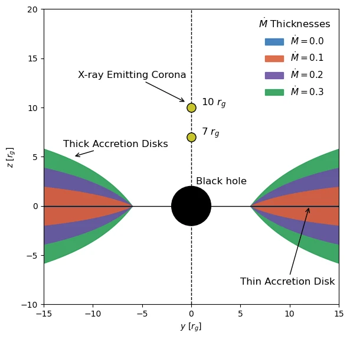

01 · X-RAY ASTROPHYSICS
Finite-thickness accretion disks
Wake Forest University · 2026–present
My current project with Dr. Alejandro Cárdenas-Avendaño and Dr. Javier García at NASA Goddard Space Flight Center asks whether neglecting disk thickness in X-ray reflection spectroscopy can lead to underestimates of black-hole spin and coronal height. Earlier work with FENRIR, a relativistic ray-tracing suite for thick accretion disks, suggested this could happen, but the effect had not been measured across a broad set of systems and observations.
I reproduced prior results, established numerical convergence, compared FENRIR with established thin-disk models, and built an independent validation copy of the code. I then simulated thick-disk spectra and fit them with thin-disk models using Markov chain Monte Carlo sampling. Across repeated trials, the recovered values support underestimation of spin and coronal height. I also found a bias in disk inclination and traced it to relativistic effects in highly inclined disks.
I am preparing a first-author paper on the causes and scale of these biases and their implications for future observing missions, with submission planned for this winter.
